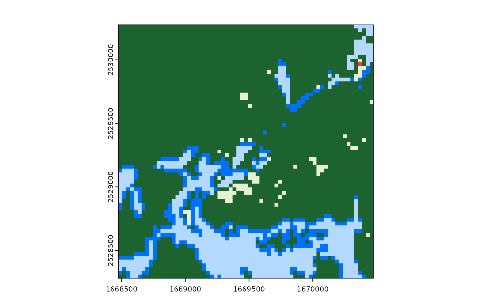
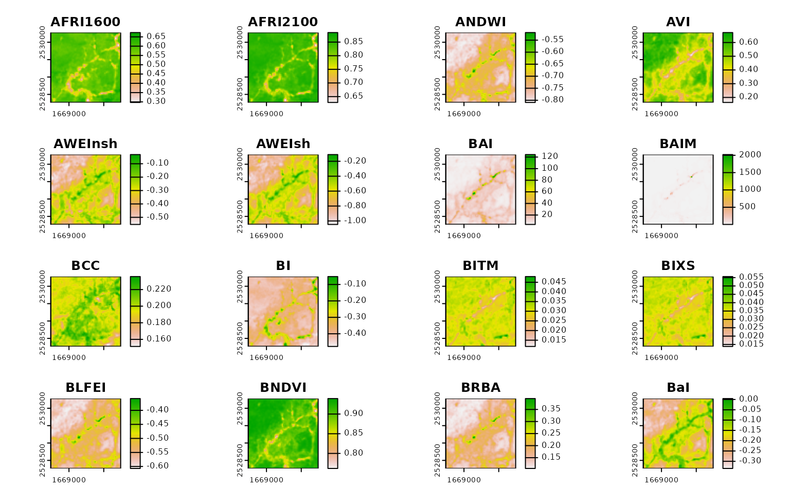

This vignette aims to provide a “cookbook” walking through common use cases and code patterns for rsi. If you’ve got a problem that it seems like rsi should be able to solve, hopefully this document can help – otherwise, open an issue and we’ll see if we can get you started! And if you’ve got a use case that took you a second to figure out, please feel free to open a PR to add it as an example to this document.
With that introduction out of the way, we’ll go ahead and load rsi:
And start answering: How can I…
Get one composite per year, month, or other interval?
If you’re looking to get separate files for several intervals, you’ll
need to call get_stac_data() separately for each of those
intervals. The easiest way to do this is through something like
vapply() or a for-loop. Iterate along your intervals of
interest, construct your start_date and
end_date inside of each iteration, and call
get_stac_data() using those dates as arguments:
aoi <- sf::st_point(c(-74.912131, 44.080410))
aoi <- sf::st_set_crs(sf::st_sfc(aoi), 4326)
aoi <- sf::st_buffer(sf::st_transform(aoi, 5070), 1000)
downloaded_years <- vapply(
2018:2020,
function(year) {
get_stac_data(
aoi = aoi,
start_date = glue::glue("{year}-01-01"),
end_date = glue::glue("{year}-12-31"),
asset_names = "lcpri",
stac_source = "https://planetarycomputer.microsoft.com/api/stac/v1",
collection = "usgs-lcmap-conus-v13",
output_filename = file.path(tempdir(), glue::glue("{year}.tif"))
)
},
character(1)
)
downloaded_years
#> [1] "/tmp/RtmprdMWIl/2018.tif" "/tmp/RtmprdMWIl/2019.tif"
#> [3] "/tmp/RtmprdMWIl/2020.tif"This ensures that get_stac_data() is run using the same
arguments each time, so your outputs should be standardized across each
interval!

Filter the imagery I download by cloud cover (or other metadata)?
If you want to refine the outputs from your STAC query, the best approach is to write a custom query function using CQL2. CQL2 is a complicated topic, which is covered in a bit more detail both in the Downloading Data vignette as well as in the STAC website’s tutorials, but at its core is a query language that lets us filter our results down using a spatiotemporal area of interest as well as other item-level metadata.
This requires knowing what metadata your STAC API provides for the
items you’re querying! Luckily, a good number of these fields are
standardized via the STAC standard and various STAC extensions. For
instance, items implementing the electro-optical
extension will have an eo:cloud_cover field which we
could use to filter the results of our query.
Writing a query function to filter using this field might look like this:
aoi <- sf::st_point(c(-74.912131, 44.080410))
aoi <- sf::st_set_crs(sf::st_sfc(aoi), 4326)
aoi <- sf::st_buffer(sf::st_transform(aoi, 5070), 1000)
custom_query_function <- function(bbox,
stac_source,
collection,
start_date,
end_date,
limit,
...) {
geometry <- rstac::cql2_bbox_as_geojson(bbox)
datetime <- rstac::cql2_interval(start_date, end_date)
request <- rstac::ext_filter(
rstac::stac(stac_source),
collection == {{collection}} &&
t_intersects(datetime, {{datetime}}) &&
s_intersects(geometry, {{geometry}}) &&
`eo:cloud_cover` < 50
)
rstac::items_fetch(rstac::post_request(request))
}And we can use this to filter down how much data we’ll download! For
instance, we could download Landsat imagery for our area of interest
without using our new query function and setting
composite_function to NULL, so that we’ll get
one file per Landsat image:
unfiltered_landsat_images <- get_landsat_imagery(
aoi,
start_date = "2023-06-01",
end_date = "2023-09-01",
# Only downloading one asset, because we aren't using this data for anything
asset_names = landsat_band_mapping$planetary_computer_v1["red"],
mask_function = NULL,
mask_band = NULL,
output_filename = tempfile(fileext = ".tif"),
composite_function = NULL
)
length(unfiltered_landsat_images)
#> [1] 12And we could compare that to a query using our custom query function, to see how many images are filtered out by our CQL2 query:
filtered_landsat_images <- get_landsat_imagery(
aoi,
start_date = "2023-06-01",
end_date = "2023-09-01",
query_function = custom_query_function,
asset_names = landsat_band_mapping$planetary_computer_v1["red"],
mask_function = NULL,
mask_band = NULL,
output_filename = tempfile(fileext = ".tif"),
composite_function = NULL
)
length(filtered_landsat_images)
#> [1] 7We only wind up downloading about half the number of images!
Calculate all possible indices using a certain data set?
Say you’ve got some imagery:
aoi <- sf::st_point(c(-74.912131, 44.080410))
aoi <- sf::st_set_crs(sf::st_sfc(aoi), 4326)
aoi <- sf::st_buffer(sf::st_transform(aoi, 5070), 1000)
our_imagery <- get_landsat_imagery(
aoi,
start_date = "2023-06-01",
end_date = "2023-07-01",
output_filename = tempfile(fileext = ".tif")
)You want to calculate some indices from this imagery. Specifically, you want to calculate all the indices you can from this imagery – you’re doing some sort of machine learning/data mining work, and you want to throw as many indices in the mix as possible.
To do that using calculate_indices(), you’re going to
need to only provide formulas for the indices that can be calculated
from your particular data source. We might look at the columns available
for filtering from spectral_indices():
spectral_indices() |>
head(1)
#> # A tibble: 1 × 9
#> application_domain bands contributor date_of_addition formula long_name
#> <chr> <list> <chr> <chr> <chr> <chr>
#> 1 vegetation <chr [2]> https://githu… 2021-11-17 (N - 0… Aerosol …
#> # ℹ 3 more variables: platforms <list>, reference <chr>, short_name <chr>It might seem like we’d want to use the platforms column
here: we just downloaded a bunch of data from the Landsat-OLI platform,
so we probably want to calculate indices that correspond to this
platform. Unfortunately, if we use filter_platforms() to do
this filtering, we’ll get an error inside of
calculate_indices():
try(
calculate_indices(
our_imagery,
filter_platforms(platforms = "Landsat-OLI"),
output_filename = tempfile(fileext = ".tif")
)
)
#> Error in eval(calc) : object 'gamma' not foundThe issue is that a number of the indices in the Awesome Spectral Indices project have formulas that require additional data. You can see a list of them in the ASI documentation described as “additional index parameters”, and they range from wavelength values to exponentiation factors to weighting parameters and so on.
If you care about using a specific index, then it’s your job to
figure out what extra parameters that index requires and how you’ll
provide them. The spectral_indices() table also includes a
DOI to the authoritative reference (as listed in the ASI project) which
can hopefully help with this.
However, if you’re looking to automatically calculate just the
indices that don’t require external parameters, you can do that as well.
Rather than use filter_platforms(), we’ll use
filter_bands() to retrieve all the spectral indices that
can be calculated using the bands available in our raster.
Assuming you used one of the wrapper functions in rsi, like
get_landsat_data() or get_sentinel2_data(),
your raster bands should automatically be named to match the band names
used in the ASI project. That means we can pass the names of your raster
directly to filter_bands():
filter_bands(bands = names(terra::rast(our_imagery))) |>
head(1)
#> # A tibble: 1 × 9
#> application_domain bands contributor date_of_addition formula long_name
#> <chr> <list> <chr> <chr> <chr> <chr>
#> 1 vegetation <chr [2]> https://githu… 2021-11-17 (N - 0… Aerosol …
#> # ℹ 3 more variables: platforms <list>, reference <chr>, short_name <chr>And we can pass the outputs of that function to
calculate_indices() to only calculate this subset of
indices:
calculate_indices(
our_imagery,
filter_bands(bands = names(terra::rast(our_imagery))),
output_filename = tempfile(fileext = ".tif")
) |>
terra::rast() |>
terra::plot()
#> Warning in x@ptr$writeStop(): GDAL Message 1:
#> /tmp/RtmprdMWIl/file26951a1e0b95.tif: Metadata exceeding 32000 bytes cannot be
#> written into GeoTIFF. Transferred to PAM instead.